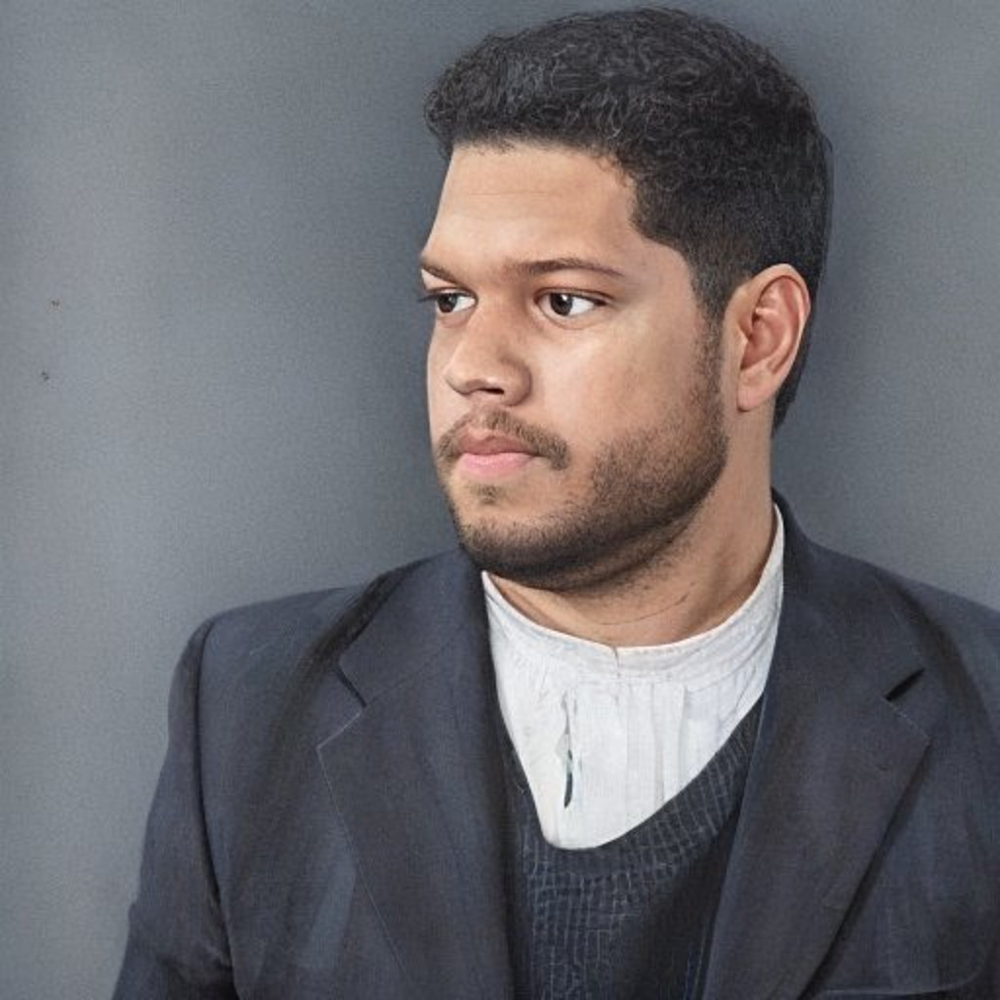

Marcos
@marcosobel
Aqui, você terá acesso a todas as minhas informações de contato e rede social, reunidas em um só lugar. Se você estiver interessado em trabalhos ou colaborações acadêmicas, por favor não hesite em me contactar através de e-mail. Espero vê-lo em breve